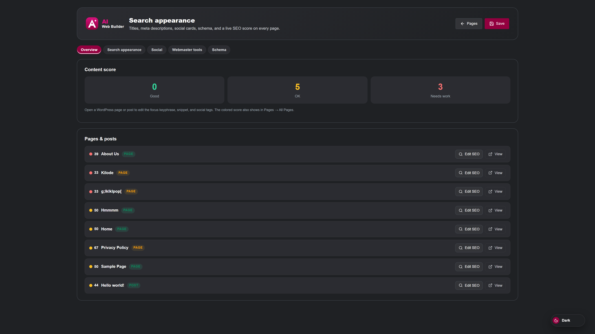

Search appearance
After you build in Design or Studio, fill in titles, descriptions, and social cards so search engines and social sites know how to present the page. Open Elementiq → SEO, or edit the snippet on the page itself.

Overview, content score, and the pages list.
Title, meta description, focus keyphrase, and social tags. A content score helps you see what is still missing.
Site name, home title, organization details, default social image, webmaster verification, and a sitemap generated by the plugin.